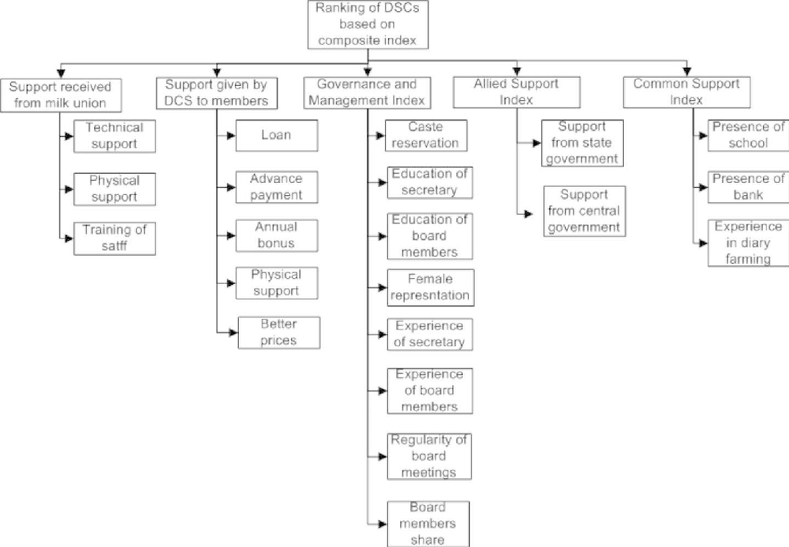

Published · Annals of Operations Research, 2022 · 2-minute summary
Performance Assessment of Dairy Cooperative Societies
An AHP-based composite index approach · with Goutam Sutar, Rakesh Arrawatia, Krantiraditya Dhalmahapatra, and Ashish Garg
Village dairy cooperatives collect milk from small farmers across India. We build a single score to compare how well they perform, and find that good governance, support to members and support from the milk union matter most.
1 · The question
How do you tell a strong cooperative from a weak one?
Dairy cooperatives collect milk, pay farmers and provide services. Agencies that support them need a simple way to compare performance and decide where to help. We build one.
2 · The setting
Cooperatives supported under the National Dairy Plan
98
dairy cooperatives in six Indian states
4
expert cooperative secretaries, each with 25 to 30 years in dairy cooperatives
3 · How we measure it
Experts set the weights, records supply the scores
The experts compared five areas of support two at a time. A standard decision method, the Analytic Hierarchy Process, turns those comparisons into importance weights and checks that each expert’s answers are consistent. Each cooperative’s records are then combined with the weights into one score.

From the paper: the five areas and the items within each that make up the score. Source: Fig. 2, Annals of Operations Research (2022).
4 · What matters most
Three areas carry most of the weight
Importance weight of each area (%)
Governance and management
30%
Support given to members
29%
Support from the milk union
27%
Government (allied) support
8%
Common support
6%
Weights sum to 100 percent.
5 · How cooperatives compare
A wide gap between best and worst
Composite performance score
Best cooperativeTamil Nadu
0.61
Worst cooperativeMaharashtra
0.14
The best cooperative scored well on technical support and on governance and management; the worst trailed on every indicator.
Top-performing cooperatives gain most from good governance and management, support to members, and support from milk unions. Since government support is similar across cooperatives, these three are the crucial indicators for long-term sustainability.